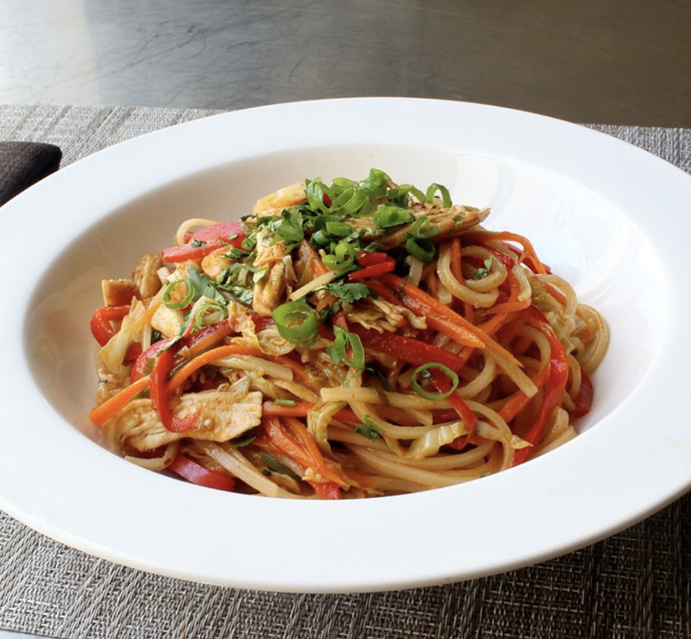

Spicy Chicken Noodles

Description
Spicy Chicken Noodles combine tender chicken, vibrant vegetables, and aromatic spices, all stir-fried together and tossed with noodles for a deliciously spicy and flavorful dish.
Ingredients
- Vegetables:
- 1 large carrot, finely sliced or shredded
- 2 cups shredded green cabbage
- 1 red bell pepper, thinly sliced
- 2 jalapeno pepper, seeded and minced
- ½ cup chopped green onions
- 3 cloves garlic, finely crushed
- Sauce:
- ½ cup chicken broth
- ¼ cup seasoned rice vinegar
- 1 tablespoon hoisin sauce
- 1 tablespoon soy sauce, plus more to taste
- 1 tablespoon ketchup
- 1 tablespoon brown sugar
- 1 tablespoon sriracha hot sauce, or more to taste
- 1 teaspoon red pepper flakes
- Noodles:
- 1 (8 ounce) package dried rice noodles
- 1 pinch salt
- 8 ounces cooked chicken breast, torn into bite-size pieces
- 1 tablespoon sesame oil
- 1 tablespoon vegetable oil
- ½ cup freshly chopped cilantro
Directions
- Prepare vegetables: Place carrots, cabbage, bell pepper, jalapeno pepper, green onions, and garlic in a mixing bowl.
- Prepare sauce: Mix chicken broth, rice vinegar, hoisin sauce, soy sauce, ketchup, brown sugar, sriracha sauce, and red pepper flakes in a separate bowl.
- Prepare noodles: Place dry rice noodles in a large bowl. Cover with boiling water, add salt, and let sit for about 10 minutes until soft. Drain and cool with cold water.
- Combine noodles and chicken: Transfer noodles to a mixing bowl. Add shredded chicken and drizzle with sesame oil. Toss to coat.
- Cook vegetables: Heat vegetable oil in a large skillet over high heat. Add vegetable mixture and cook until hot and steamy, about 1-2 minutes.
- Add sauce: Pour sauce into the skillet and cook until it starts to bubble, about 1 minute.
- Combine everything: Add noodles and chicken to the skillet. Cook and stir to blend and heat through, about 1 minute.
- Finish and serve: Remove from heat, add chopped cilantro, and stir. Serve and enjoy!
Home